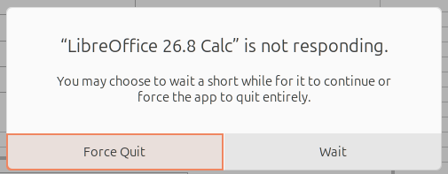
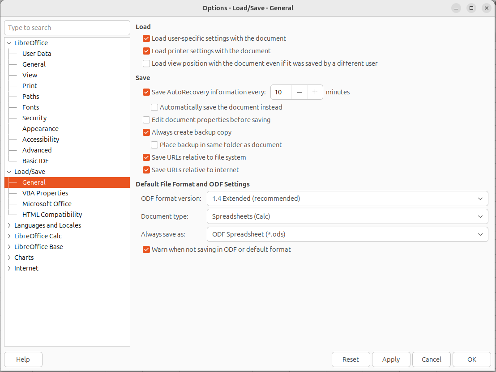

Calc hangus; taastamine ei toonud salvestamata tööd tagasi
Ubuntu LibreOffice 26.8 Calc jäi diagrammi andmeseeriate muutmisel vastamata. Ootamine ei taastanud tööd; järgmisel avamisel ei pakutud kasutaja teatel taastamist ja salvestamata muudatused läksid kaotsi.
- Kontrolliti LibreOffice’i profiile ja taastamisandmeid; kasutatavat taastamisfaili ei leitud.
- Vaadati Tools → Options → Load/Save → General: Save AutoRecovery information every 10 minutes oli sees, Automatically save the document instead väljas ja Always create backup copy sees.
- Uuriti süsteemilogi, sh eri käivitusi:
journalctl --list-boots --no-pager | tail -n 8
journalctl --since "2026-11-07 12:40" --until "2026-11-07 13:15" --no-pager | grep -Ei 'soffice|libreoffice|apparmor|seccomp|segfault|oom|coredump|gnome-shell|killed process' | tail -n 60Logis nähtud AppArmori keeldumised ei tõenda hangumise põhjust. soffice.bin: Error reading events from display: Broken pipe oli seansi sulgemise ajal; ka see ei selgita varasemat hangumist.
Allikates on vastuolu: kasutaja kirjeldas varem salvestamata kohalikku faili, kuid algkuva pealkiri oli tiitrimine.ods (Remote) ja veateate lisas kirjeldati SFTP taastamiskirjet. Ei ole kinnitatud, et need viitavad samale kaotatud tööle; kaugasukohta ei esitata vea põhjusena. Päeva õhtul lisati avalikule veateatele 171844 kommentaar 6. Raporti esitamine on kinnitatud, taastamine ja püsiparandus mitte.

